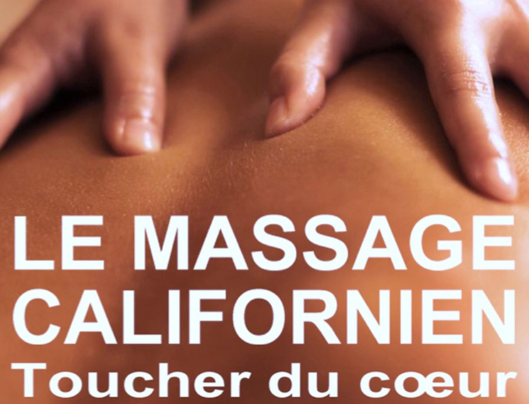

Massage Californien
Toucher du cœur
Le Massage Californien est apparu au début des années 1970, à l'époque de l'émergence des groupes de thérapie où primaient le développement du potentiel humain, l'expression des sentiments et les liens corps-esprit, les travaux de W. Reich sur la circulation d'énergie.
Le centre de croissance Esalen (San Francisco) rassemblait alors de nombreux chercheurs qui contribuèrent à ce courant de pensée. Diverses formes de thérapies et plusieurs techniques corporelles y sont nées.
Dans ce contexte New Age, le Massage Californien a été initié par Margaret Elke. Elle s'est inspirée de la douceur du massage Esalen qu'elle a combiné avec une démarche plus intérieure et émotive. Elle a codifié, structuré et enseigné la technique aux États-Unis ; la pratique s'est peu à peu développée et professionnalisée, avant de s'étendre au monde entier dans les années 1980.
Au départ du massage suédois, le Massage Californien est une approche globale qui vise autant la détente que l'éveil et la stimulation de la conscience psychocorporelle. Il permet un rééquilibrage énergétique du corps, une profonde relaxation physique et psychique par la pratique de longs mouvements lents et fluides qui valorisent l'enveloppe corporelle et l'identité personnelle dans le relâchement profond du corps et de l'esprit.
Ce massage aide à libérer des émotions enfouies dans la mémoire corporelle : plus le massé parvient au lâcher prise et à profiter des bienfaits du contact, plus il s'ouvre au « toucher du cœur », terme utilisé dans le cadre de cette pratique.
Véritable voyage intérieur, le massage invite le patient à découvrir son corps, à l'aimer et à l'unifier. Il permet de retrouver la richesse sensorielle inscrite dans le corps et de renouer avec les signaux que celui-ci envoie. L'effet est donc physique et psychologique puisqu'il améliore la perception du schéma corporel, l'écoute et l'estime de soi, et favorise l'épanouissement, une meilleure structuration de la personnalité.
Il régénère la mémoire corporelle et aide les personnes ayant vécu un traumatisme et/ou qui suivent une démarche psychothérapeutique. À l'issue de la séance, le patient se sent potentiellement régénéré.
Ce massage est basé sur une réception inconditionnelle où tout se joue dans le moment présent.
Formé par Solange Brasseur, je pratique le Massage Californien depuis plus de trente ans.
Depuis 2012, je donne des formations dans la ligne originelle de Margaret Elke, conceptrice de ce massage. Dans un cadre bienveillant, ces ateliers sont composés d'applications au toucher respectueux, la mise en place, la démonstration des gestes sur modèle et le suivi de pratique. Le participant reçoit un syllabus illustré et la certification.
Je propose différents formats d'ateliers :
- Les formations
- Les Journées Partage
- Les Journées à thème
- Les supervisions
Pour le découvrir et le vivre, ce massage peut être donné en individuel : prendre rendez-vous.
Tarif : 60 € — sur table ou futon. Déplacement possible.
⇩ Télécharger la fiche complète (PDF)